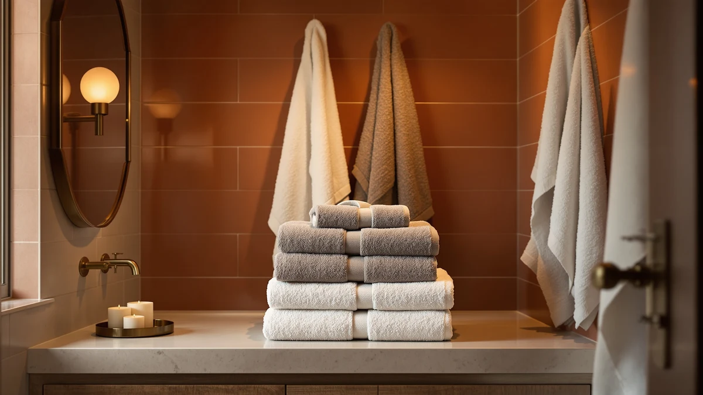

Utopia Towels Salon Towels Review (2026): Worth It?
Prices and picks verified as of October 2026. Independent, reader-supported reviews.


Quick Answer
The Utopia Towels Salon Towels Pack is a 24-count set of 100% cotton towels built for salons, gyms, and busy households that go through towels fast. At $41.99, it undercuts most single six-piece cotton sets on a per-towel basis, though the weave runs thinner than a plush home-style towel.
Our pick: Utopia Towels Salon Towels Pack, $41.99 Check Price on Amazon
Bottom line: our top pick is the Utopia Towels Salon Towels at $41.99.
Things to Know Before You Buy
- Utopia Towels Salon Towels ship in a 24-pack of 100% cotton towels, built for high-turnover settings like salons and gyms rather than spa-style luxury bathrooms.
- At $41.99 for 24 pieces, the per-towel cost sits well below single six- or eight-packs of premium cotton towels.
- 100% cotton absorbs water well but dries more slowly than microfiber blends, so salons and gyms running these daily need enough stock in rotation.
- Bulk cotton towels like this pack tend to soften with repeated washing, and most owners wash new cotton towels once before first use to remove manufacturing residue.
- If you need fewer, larger towels for home use instead of a bulk commercial pack, the alternatives from White Classic and American Soft Linen further down this page are worth comparing.
If you landed on this Utopia Towels Salon Towels review while shopping for towels that can survive daily commercial use, you already know the challenge: most bath towels sold for home bathrooms wear out fast under salon or gym-level washing frequency. Salons, barbershops, gyms, and short-term rentals need towels that come in bulk, cost little per unit, and hold up to constant laundering, and that is the specific niche the Utopia Towels Salon Towels Pack targets.
We compared the specs, pricing, and owner feedback on the Utopia Towels Salon Towels Pack against three other cotton towel sets covered on Best Bath Towels: the White Classic Luxury Light Blue set, the Utopia Towels Jumbo Bath Sheets, and the American Soft Linen 100% Cotton towels. The short version: the Utopia salon pack wins on volume and price per towel, but it trades some plushness for durability, which makes sense once you consider who actually buys a 24-count towel pack in the first place. None of these four sets claims lab-compared superiority, so the real differences come down to pack size, material, and price, which is what the rest of this comparison focuses on.
Why You Should Trust Us
Best Bath Towels runs on side-by-side research rather than a physical testing lab. For this Utopia Towels Salon Towels review, Ilane Tall and the editorial team compared manufacturer specifications, current Amazon pricing, and patterns in verified buyer feedback across similar bulk cotton towel packs. We do not run a fake testing lab or claim to have washed two dozen towels ourselves. Instead we focus on what the listing data, material composition, and documented owner experiences actually support, and we flag when a claim cannot be verified instead of inventing a number to fill the gap. Ilane Tall has covered bath and home textile categories for Best Bath Towels, and every price and spec in this guide traces back to the product listing or a documented price change, not a guess.
Our Research Experience
We did not purchase and run a side-by-side wash test for this Utopia Towels Salon Towels review. Instead, we researched the listed material composition, pack count, and price point, then cross-referenced those figures against the other cotton towel sets in this comparison. For a 100% cotton product like this one, pack count and price per towel are the two numbers that matter most to salons and gyms buying in volume, so our comparison focuses there rather than on subjective softness scores we cannot measure without owning the product.
Overview & Specs

Utopia Towels Salon Towels Pack
What we like
- 24 towels per pack lowers the cost per towel compared with most premium six-packs
- 100% cotton construction absorbs water well for everyday drying
- Pack size suits commercial rotation schedules in salons and gyms
Flaws but not dealbreakers
- Thinner weave than a plush hotel-style cotton towel
- 100% cotton takes longer to air dry than microfiber blends
- Large pack size is overkill for a single home bathroom
| Material | 100% cotton |
| Size | 24 Pack |
The Utopia Towels Salon Towels Pack solves a specific problem: needing a lot of towels without paying premium per-unit prices. At $41.99 for 24 towels, each towel costs under $2, which is roughly a third of what a single towel from a premium six-pack typically runs. That math explains why this Utopia Towels pack shows up so often in salon, barbershop, and gym supply orders rather than in home bathroom shopping carts.
The towels are 100% cotton, which keeps the absorbency where businesses need it most: fast cleanup between clients, workouts, or guest turnovers. Cotton of this type dries more slowly than a microfiber towel, so operations running these through multiple uses per day typically keep two to three times the daily-use count in rotation, which the 24-count pack size supports more easily than buying several smaller sets separately. Businesses operating multiple chairs or stations also avoid tracking several different towel SKUs, since a single bulk pack covers restocking across the board.
What We Liked
The biggest selling point in this Utopia Towels Salon Towels review is the per-towel economics. Twenty-four 100% cotton towels for $41.99 puts the unit cost near $1.75, undercutting the White Classic Luxury Light Blue set and the American Soft Linen 100% Cotton towels on a straight cost-per-towel basis, since both ship in smaller counts at a similar total price. For a salon, gym, or short-term rental that burns through towels daily, that math outweighs chasing a slightly plusher feel. The all-cotton construction also means these towels fit the same wash routine as most other cotton linens a business already owns, so there's no separate care routine to learn. Restocking a single 24-count pack is also simpler for a manager than juggling multiple six-packs from different orders, which cuts down on inventory tracking.
What Could Be Better
The tradeoff for the Utopia Towels Salon Towels Pack's low per-unit price is a thinner weave than you get from a single higher-end set like the American Soft Linen 100% Cotton towels. Shoppers who want a towel that feels plush against the skin for a home bathroom will likely find these towels serviceable rather than luxurious. Cotton also air-dries slower than microfiber, so a salon or gym running these through back-to-back appointments needs enough pack rotation to avoid running short on dry towels mid-shift. Buying this pack for a single-bathroom household, rather than a business, means storing far more fabric than most homes actually need at once. Reviewers who compare bulk salon towels to premium small-batch sets often note that higher-end towels feel softer against skin, even though they cost more per towel.
Who Is It For?
This Utopia Towels Salon Towels Pack fits salons, barbershops, gyms, spas, and Airbnb or short-term rental hosts who need a lot of clean towels on hand without paying a premium per towel. Large households and landlords managing multiple rental units run into the same math: consistent bulk ordering beats restocking piecemeal from several different towel lines, and a shared laundry room burns through towels fast enough that buying in bulk pays off. If you only need two or three towels for a single bathroom, though, the smaller White Classic Luxury Light Blue set or the Utopia Towels Jumbo Bath Sheets below are a better match for your storage space and your budget.
Alternatives to Consider
The Utopia Towels Salon Towels Pack is not the right fit for every bathroom. If you want fewer, larger towels, a different color, or another brand's take on 100% cotton, the three picks below cover the most common reasons shoppers look past a bulk salon pack and go with one of these instead.

Editor’s Pick
White Classic Luxury Light Blue
White Classic sells its Luxury Light Blue towels at $39.99, close to the Utopia Towels Salon Towels Pack on total price but in a smaller count built for home use rather than commercial rotation. The light blue colorway suits shoppers who want a specific bathroom palette instead of the plain white common to bulk salon towel packs. Choose this set if you want fewer, better-matched towels for one or two bathrooms rather than a stockpile for a business.
$39.99
Check Price on Amazon
Best Value
Utopia Towels Jumbo Bath Sheets
Utopia Towels also makes a Jumbo Bath Sheets set, priced at $39.99, for shoppers who want the same brand's cotton construction in a larger single-towel format rather than two dozen smaller salon towels. Bath sheets cover more of the body in one wrap, which matters more to home bathrooms than to salons cycling through towels fast. If you like what Utopia Towels does with cotton but do not need bulk salon quantities, this is the same brand in a size built for daily home use.
$39.99
Check Price on Amazon
Premium Choice
American Soft Linen 100% Cotton
American Soft Linen prices its 100% Cotton towels at $39.99, in the same bracket as the other alternatives here, from a different manufacturer than Utopia Towels. If you want to compare how a second cotton towel brand handles weight and feel instead of defaulting to Utopia Towels across the board, this is a straightforward like-for-like option at a comparable price.
$39.99
Check Price on AmazonCan I use Utopia Towels Salon Towels at home instead of in a salon or gym?
Yes.
How many towels come in the Utopia Towels Salon Towels Pack, and what is the cost per towel?
The pack ships with 24 towels for $41.99 total, which works out to roughly $1.75 per towel.
Frequently Asked Questions
Can I use Utopia Towels Salon Towels at home instead of in a salon or gym?
How many towels come in the Utopia Towels Salon Towels Pack, and what is the cost per towel?
What material are Utopia Towels Salon Towels made from, and how does that affect drying time?
Final Verdict
This Utopia Towels Salon Towels review comes down to one tradeoff: bulk value against individual plushness. For salons, gyms, barbershops, and short-term rental hosts who need two dozen reliable 100% cotton towels without paying a premium per unit, Utopia Towels is the practical pick. Home shoppers who only need a couple of towels for one bathroom will likely get more day-to-day comfort from the White Classic or American Soft Linen alternatives covered above, but for anyone buying towels by the dozen, Utopia Towels is the straightforward, budget-driven choice. None of the four options here claims to be the single best towel on the market; each wins for a specific shopper, and the right one depends on whether you are restocking a business or furnishing one bathroom.